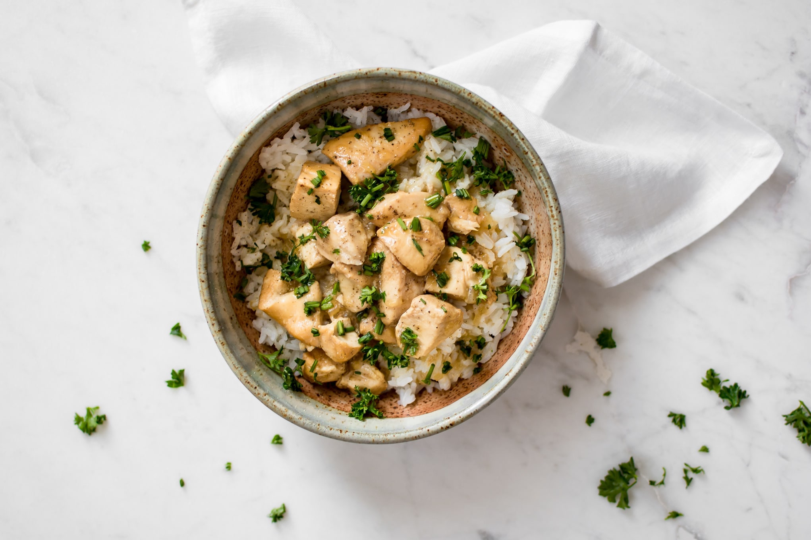

Instant Pot Honey Garlic Chicken
This delicious, low-effort recipe will please even the pickiest eaters.

Here's what you'll need:
- 3 chicken breasts, cubed
- 1 tablespoon olive oil
- 1/3 cup honey
- 1 tablespoon soy sauce
- 3/4 cup water
- 1 teaspoon lemon juice
- 6 cloves garlic, minced
- 1 tbsp corn starch & 2 tbsp cold water
- salt and pepper, to taste
- Fresh chives or scallions chopped, for garnish
- Fresh parsley to taste for garnish (optional)
Instructions:
- Prep your chicken. Add the honey, soy sauce, water, lemon juice, and garlic to a small bowl and whisk together.
- If making rice for this recipe, it's good to get it started about now. I would use 2 cups uncooked rice for 4 people, or perhaps a bit less if they prefer smaller portions.
- Press the "sauté" button on your Instant Pot. Add the olive oil and chicken and cook for 3 minutes, stirring often.
- Pour the honey garlic mixture into your Instant Pot and give it a good stir. Close the lid, set it to "sealing" and cook the chicken on high pressure for 5 minutes. It'll take a few minutes to get up to pressure.
- Once the countdown has finished, carefully do a quick release of the pressure.
- Set your Instant Pot to "sauté" again to thicken the sauce. Mix the cornstarch and water together in a small bowl, then add it to your Instant Pot. Cook for a few minutes until the sauce is thickened.
- Season with salt & pepper as needed. Serve over rice. Enjoy!